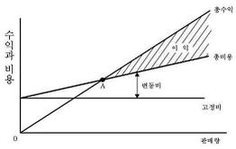
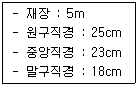
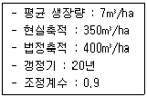
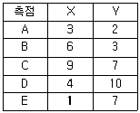
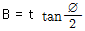
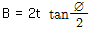
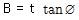
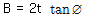

산림기사 (2017-05-07 기출문제)
1과목: 조림학
1. 관다발 형성의 시원세포가 목부방향으로 분열하여 형성하는 조직은?
- 부정아
- 체관부
- 물관부
- 수피층
(정답률: 64%)

2. 산림 내에서 나무가 죽어 공간이 생기면 주변의 나무들이 빈 공간 쪽으로 자라오고, 숲의 가장자리에 위치한 나무는 햇빛이 많이 있는 바깥쪽으로 빨리 자란다. 이는 어떤 현상과 가장 밀접한 관련이 있는가?
- 굴지성
- 주광성
- 휴면성
- 삼투성
(정답률: 85%)
3. 수목의 개화 촉진 방법이 아닌 것은?
- 환상박피 실시
- 단근, 이식 실시
- 봄철에 질소 시비
- 간벌, 가지치기 실시
(정답률: 58%)
4. 파종량을 산정할 때 필요한 인자가 아닌 것은?
- 발아세
- 종자수
- 발아율
- 순량율
(정답률: 82%)
5. 식재 후 첫 번째 제벌작업이 실시되는 임종별 임령으로 옳은 것은?
- 소나무림 : 15년
- 삼나무림 : 20년
- 상수리나무림 : 15년
- 일본잎갈나무림 : 8년
(정답률: 65%)
6. 광합성 작용에 의해서 생성된 탄수화물이 이동 운반되는 통로는?
- 체관
- 물관
- 헛물관
- 수지관
(정답률: 81%)
7. 묘목의 자람이 늦어 묘상에 가장 오랫동안 거치하는 수종은?
- Picea jezoensis
- Larix kaempferi
- Pinus densiflora
- Quercus acutissima
(정답률: 33%)
8. 침엽수의 적절한 가지치기 방법은?
- 역지 이상의 가지를 자른다.
- 역지 이하의 가지를 자른다.
- 수고의 1/2 이상의 가지를 자른다.
- 수고의 1/2 이하의 가지를 자른다.
(정답률: 81%)
9. 소나무류에서 주로 실시하는 접목은?
- 절접
- 박접
- 아접
- 할접
(정답률: 79%)
10. 천연림 보육에 대한 설명으로 옳지 않은 것은?
- 하층임분은 특별한 이유가 없는 한 그대로 둔다.
- 미래목은 실생목보다 맹아목을 우선적으로 고려하여 선정하는 것이 좋다.
- 세력이 너무 왕성한 보호목은 가지를 제거하여 미래목의 생장에 영향이 없도록 한다.
- 상층목의 생육공간을 확보해주기 위하여 수관경쟁을 하고 있는 불량형질목과 가치가 낮은 임목은 제거한다.
(정답률: 85%)
11. 인공조림에 의하여 새로운 수종의 숲을 조성하는데 가장 효율적인 갱신 방법은?
- 모수작업
- 산벌작업
- 택벌작업
- 개벌작업
(정답률: 82%)
12. 잎의 유관속이 1개인 수종은?
- Pinus rigida
- Pinus densiflora
- Pinus koraiensis
- Pinus Thunbergii
(정답률: 66%)
13. 단순림과 비교한 혼효림의 장점으로 옳은 것은?
- 산림병해충 등 각종 재해에 대한 저항력이 높다.
- 가장 유리한 수종으로만 임분을 형성할 수 있다.
- 산림작업과 경영이 간편하고 경제적으로 수행할 수 있다.
- 숲을 구성하는 임목의 나이 차이가 거의 없어 관리하기 용이하다.
(정답률: 88%)
14. 산벌작업 방법에 속하는 것은?
- 단벌
- 윤벌
- 후벌
- 전벌
(정답률: 87%)
15. 테트라졸륨의 사용 목적으로 옳은 것은?
- 바이러스 검출
- 종자활력검사
- 발아촉진유도
- 대기오염의 영향 검사
(정답률: 87%)
16. MÓller의 항속림 사상의 강조 내용으로 옳은 것은?
- 인공갱신을 원칙으로 한다.
- 정해진 윤벌기에 군상목택벌을 원칙으로 한다.
- 벌채목선정은 산벌작업의 선정기준에 준해서 한다.
- 개벌을 금하고 해마다 간벌 형식의 벌채를 반복한다.
(정답률: 70%)
17. 토양 수분에서 수목이 이용 가능한 것은?
- 결합수
- 흡습수
- 팽윤수
- 모세관수
(정답률: 81%)
18. 잎의 기공을 열게 하여 증산작용을 촉진시키는 방법은?
- 암흑 조건을 제공한다.
- 잎의 수분포텐셜을 높여준다.
- 휴면 유도 물질인 ABA를 주입한다.
- 잎의 엽육조직 세포간극에 존재하는 탄산가스 농도를 높여준다.
(정답률: 79%)
19. 나자식물의 엽육조직에서 책상조직과 해면조직이 분화되지 않은 수종은?
- 주목
- 전나무
- 소나무
- 은행나무
(정답률: 52%)
20. 소립종자 1000개의 무게로 나타내는 종자 검사기준은?
- 실중
- 효율
- 용적율
- 발아력
(정답률: 78%)
2과목: 산림보호학
21. 리지나뿌리썩음병에 대한 설명으로 옳은 것은?
- 침엽수와 활엽수 모두 잘 발생한다.
- 불이 발생한 지역에서 잘 발생한다.
- 병원균의 포자는 저온에서도 잘 발아한다.
- 산성토양보다는 중성토양에서 병원균의 활력이 높다.
(정답률: 83%)
22. 솔잎혹파리 및 솔껍질깍지벌레 방제를 위하여 수간주사에 사용되는 약제는?
- 테부코나졸 유제
- 디플루벤주론 수화제
- 페니트로티온 수화제
- 이미다클로프리드 분산성액체
(정답률: 56%)
23. 종실을 가해하는 해충이 아닌 것은?
- 밤바구미
- 버들바구미
- 솔알락명나방
- 복숭아명나방
(정답률: 68%)
24. 수병목을 예방하기 위한 숲가꾸기 작업에 해당하지 않는 것은?
- 제벌
- 개벌
- 풀베기
- 가지치기
(정답률: 75%)
25. 벚나무 빗자루병원균에 해당하는 것은?
- 세균
- 자낭균
- 담자균
- 파이토플라즈마
(정답률: 73%)
26. 볕데기(sun scorch)에 대한 설명으로 옳지 않은 것은?
- 수피가 평활하고 매끄러운 수종에서 주로 발생한다.
- 수피에 상처가 발생하지만 부후균 침투로 2차 피해는 발생하지 않는다.
- 피소현상이라고도 하며 고온에서 수피부분에 수분증발이 발생하여 수피조직이 고사한다.
- 임연목이나 가로수, 정원수, 등의 고립목의 수간이 태양의 직사광선을 받았을 때 나타난다.
(정답률: 78%)
27. 소나무 재선충병 방제방법으로 거리가 먼 것은?
- 매개충 구제
- 예방나무주사
- 중간기주 제거
- 병든 나무제거
(정답률: 71%)
28. 모잘록병 방제법으로 옳지 않은 것은?
- 밀식으로 관리한다.
- 토양 소독을 실시한다.
- 배수와 통풍을 잘하여 준다.
- 복토를 두껍게 하지 않는다.
(정답률: 82%)
29. 약제 살포시 천적에 대한 피해가 가장 적은 살충제는?
- 훈증제
- 접촉살충제
- 소화중독제
- 침투성살충제
(정답률: 74%)
30. 성충으로 월동하는 것으로만 올바르게 나열한 것은?
- 독나방, 솔나방
- 박쥐나방, 가루나무좀
- 소나무좀, 루비깍지벌레
- 밤바구미, 어스렝이나방
(정답률: 72%)
31. 식물병을 유발하는 바이러스의 구조적 특성은?
- 고등생물의 일종이다.
- 단백질로만 구성되어 있다.
- 동물 세포와 같은 구조를 지니고 있다.
- 핵단백질로 이루어져 있고 입자상 구조를 띤 비세포성 생물이다.
(정답률: 77%)
32. 산림해충 방제에 대한 설명으로 옳지 않은 것은?
- 방제약제 선정 시 천적류에 대한 영향을 고려해야 한다.
- 약제 저항성 해충의 출현은 동일한 살충제를 연용한 탓이다.
- 생물적 방제는 대체로 환경친화적 방법이므로 널리 권장 할 수 있다.
- 불임법을 이용한 방제는 생물윤리법에 위배되므로 규제를 받는다.
(정답률: 82%)
33. 솔나방에 대한 설명으로 옳지 않은 것은?
- 8령충 때 월동한다.
- 1년에 1~2회 발생한다.
- 500여개의 알을 산란한다.
- 부화유충은 번데기가 되기까지 7회 탈피한다.
(정답률: 64%)
34. 가해하는 기주범위가 가장 넓은 해충은?
- 솔나방
- 솔알락명나방
- 미국흰불나방
- 참나무재주나방
(정답률: 87%)
35. 어린 유충은 초본의 줄기 속을 식해하지만 성장한 후 나무로 이동하여 수피와 목질부를 가해하는 해충은?
- 솔나방
- 매미나방
- 박쥐나방
- 미국흰불나방
(정답률: 70%)
36. 겨울철 제설 작업에 사용된 해빙염으로 인한 수목 피해로 옳지 않은 것은?
- 잎에는 괴사성 반점에 나타난다.
- 장기적으로는 수목의 쇠락으로 이어진다.
- 염화칼슘이나 염화나트륨 성분이 피해를 준다.
- 일반적으로 상록수가 낙엽수보다 더 피해를 입는다.
(정답률: 44%)
37. 대추나무 빗자루병 방제에 가장 적합한 약제는?
- 보르도액
- 페니트로티온
- 스트렙토마이신
- 옥시테트라사이클린
(정답률: 84%)
38. 산불 발생 시 직접 소화법이 아닌 것은?
- 맞불 놓기
- 토사 끼얹기
- 불털이개 사용
- 소화약제 항공살포
(정답률: 81%)
39. 세균에 의한 수목병에 대한 설명으로 옳지 않은 것은?
- 주로 각피 침입으로 기주를 감염시킨다.
- 병징으로는 무름, 위조, 궤양, 부패 등이 있다.
- 국내에서는 그람음성세균이 수목에 피해를 준다.
- 월동 장소는 토양, 병든 잎, 병든 가지 등 다양하다.
(정답률: 76%)
40. 주로 목재를 가해하는 해충은?
- 밤바구미
- 솔노랑잎벌
- 가루나무좀
- 솔알락명나방
(정답률: 82%)
3과목: 임업경영학
41. 임목의 가격을 평가하기 위해 조사해야 할 항목으로 가장 거리가 먼 것은?(단, 주벌 수확의 경우임)
- 재종별 시장가격
- 부산물 소득 정도
- 조재율 또는 이용률
- 총재적의 재종별 재적
(정답률: 69%)
42. 다음 그림에서 총수익선과 총비용선이 만나는 점(A)을 무엇이라 하는가?

- 수익최대점
- 비용최대점
- 비용최소점
- 손익분기점
(정답률: 87%)
43. 어떤 임목의 흉고단면적이 0.1m2, 수고가 14m, 형수는 0.4일 때 형수법에 의한 재적(m3)은?
- 0.14
- 0.56
- 1.4
- 5.6
(정답률: 77%)
44. 배치 시설별 숲해설가 배치 기준으로 옳지 않은 것은?
- 수목원은 2명 이상
- 국립공원은 1명 이상
- 삼림욕장은 1명 이상
- 자연휴양림은 2명 이상
(정답률: 77%)
45. 임업이율의 성격으로 옳지 않은 것은?
- 현실이율이 아니고 평정이율이다.
- 단기이율이 아니고 장기이율이다.
- 대부이자가 아니고 자본이자이다.
- 명목이율이 아니고 실질적 이율이다.
(정답률: 80%)
46. 다음 조건에서 Huber식에 의한 통나무 재적은?

- 약 0.127m3
- 약 0.157m3
- 약 0.208m3
- 약 0.245m3
(정답률: 59%)
47. 수간석해에 대한 설명으로 옳지 않은 것은?
- 표준목을 대상으로 실시한다.
- 수간과 직교하도록 원판을 채취한다.
- 흉고를 1.2m로 했을 경우 지상 1.2m를 벌채점으로 한다.
- 수목의 성장과정을 정밀히 사정 할 목적으로 측정하는 것이다.
(정답률: 78%)
48. 임업경영비를 올바르게 표현한 것은?
- 임업소득 - 가족임금추정액
- 임업소득 - (자본이자 + 가족노임추정액)
- 임업현금수입 + 임산물가계소비액 + 임목성장액+ 미처분 임산물증감액 + 임업생산 자재 재고증감액
- 임업현금지출 + 감가상각액 + 주임목감소액 + 미처분 임산물재고 감소액 + 임업생산 자재 재고감소액
(정답률: 64%)
49. 치유의 숲 안에 설치 할 수 있는 시설에 해당하지 않은 것은?
- 편익시설
- 위생시설
- 안정시설
- 전기, 통신시설
(정답률: 63%)
50. 임목의 평균생산량이 최대가 될 때를 벌기령으로 정한 것은?
- 재적수확 최대의 벌기령
- 화폐수익의 최대 벌기령
- 토지 순이익 최대 벌기령
- 산림순수익 최대 벌기령
(정답률: 76%)
51. 산림 관리회계에서 주로 다루는 내용으로 옳지 않은 것은?
- 원가평가
- 원가계산
- 업적평가
- 계획수립과 특수한 의사 결정에 도움이 되는 정보
(정답률: 42%)
52. 임지의 가격 형성에 영향을 미치는 요인을 개별적 요인과 지역적 요인으로 구분할 경우 개별적 요인이 아닌 것은?
- 임지의 위치
- 임지의 면적
- 임지의 지세
- 임지의 토양상태
(정답률: 51%)
53. 흉고형수에 대한 설명으로 옳은 것은?
- 지위가 양호할수록 형수가 크다.
- 흉고직경이 작아질수록 형수가 작다.
- 수고가 작은 나무일수록 형수가 크다.
- 지하고가 낮고 수관의 양이 적은 나무의 형수가 크다.
(정답률: 62%)
54. 산림수확조절을 위해 면적-재적검증방법 이용 시 필요한 사항으로 옳지 않은 것은?
- 미래 임분을 위한 윤벌기
- 임분 수확 우선순위의 결정
- 소반으로 구분된 모든 산림 면적
- 수확시기까지 각 연령의 생장량을 계산 할 수 있는 능력
(정답률: 50%)
55. 임업투자결정방법에 있어 수익비용율법에 의해 투자효율을 분석하는 식은?
- 수익 ÷ 비용
- 비용 ÷ 수익
- 수익 － 비용
- 비용 － 수익
(정답률: 70%)
56. 지황조사 항목으로 토양의 점토 함유량이 30%인 경우 토양형은?
- 사토(사)
- 양토(양)
- 사양토(사양)
- 식양토(식양)
(정답률: 48%)
57. 다음 조건의 잣나무 임분에서 하이어(Heyer) 공식법에 의한 표준벌채량(m3/ha)은?

- 3.8
- 4.8
- 5.3
- 6.3
(정답률: 39%)
58. 임목평가 방법에 대한 설명으로 옳지 않은 것은?
- 장령림의 임목평가는 임목기망가법을 적용한다.
- 벌기 이상의 임목평가는 시장가역산법을 적용한다.
- 중령림의 임목평가에는 원가수익절충방법인 Glaser법을 적용한다.
- 유령림의 임목평가는 비용가법을 적용하며 이자를 포함하지 않는다.
(정답률: 68%)
59. 임업의 경제적 특성으로 옳지 않은 것은?
- 임업생산은 조방적이다.
- 자연조건의 영향을 많이 받는다.
- 육성임업과 채취임업이 병존한다.
- 원목가격의 구성요소는 대부분이 운반비이다.
(정답률: 64%)
60. 임분 수확표에 필요한 인자로 옳지 않은 것은?
- 임지표고
- 지위지수
- 평균직경
- 흉고단면적
(정답률: 53%)
4과목: 임도공학
61. 지반고가 시점 10m, 종점 50m이고 수평거리가 1000m일 때 종단기울기는?
- 4%
- 5%
- 6%
- 7%
(정답률: 61%)
62. 다각형의 좌표가 다음과 같을 때 면적은?

- 33.5m3
- 34.5m3
- 35.5m3
- 36.5m3
(정답률: 45%)
63. 중심선측량과 영선측량에 대한 설명으로 옳지 않은 것은?
- 영선측량은 평탄지에서 주로 적용된다.
- 영선측량은 시공기면의 시공선을 따라 측량한다.
- 중심선측량은 파상지형의 소능선과 소계곡을 관통하여 진행된다.
- 균일한 사면의 경우에는 중심선과 영선은 일치되는 경우도 있지만 대개 완전히 일치되지 않는다.
(정답률: 67%)
64. 산림토목 공사용 기계 중 토사 굴착에 가장 적합하지 않은 것은?
- 백호우(backhoe)
- 불도저(bulldozer)
- 트리도저(tree dozer)
- 트랙터셔블(tractor shovel)
(정답률: 52%)
65. 종단 기울기가 0인 임도의 중앙점에서 양측 길섶(길어깨)으로 3%의 횡단경사를 주고자 한다. 임도폭이 4m일 경우 양측 길섶은 임도 중앙점보다 얼마나 낮아져야 하는가?
- 1cm
- 2cm
- 3cm
- 6cm
(정답률: 59%)
66. 임도의 횡단면도를 설계할 때 사용하는 축적으로 옳은 것은?
- 1/100
- 1/200
- 1/1000
- 1/1200
(정답률: 62%)
67. 임도망 계획 시 고려사항으로 옳지 않은 것은?
- 운재비가 적게 들도록 한다.
- 신속한 운반이 되도록 한다.
- 운재 방법이 다양화되도록 한다.
- 산림풍치의 보전과 등산, 관광 등의 편익도 고려한다.
(정답률: 80%)
68. 노면을 쇄석, 자갈로 부설한 임도의 경우 횡단 기울기의 설치 기준은?
- 1.5 ~ 2 %
- 3 ~ 5 %
- 6 ~ 10 %
- 11 ~ 14 %
(정답률: 68%)
69. 급경사지에서 노선거리를 연장하여 기울기를 완화할 목적으로 설치하는 평면선형에서의 곡선은?
- 완화곡선
- 배향곡선
- 복심곡선
- 반향곡선
(정답률: 67%)
70. 어떤 산림의 임도를 설계하고자 할 때 가장 먼저 해야 할 사항은?
- 실측
- 답사
- 예비조사
- 설계서 작성
(정답률: 82%)
71. 임도개설 시 흙을 다지는 목적으로 옳지 않은 것은?
- 압축성의 감소
- 지지력의 증대
- 흡수력의 감소
- 투수성의 증대
(정답률: 69%)
72. 평판을 한 측점에 고정하고 많은 측점을 시준하여 방향선을 그리고, 거리는 직접 측량하는 방법은?
- 전진법
- 방사법
- 도선법
- 전방교회법
(정답률: 76%)
73. 임목수확작업에서 일반적으로 노동재해의 발생빈도가 가장 높은 신체부위는?
- 손
- 머리
- 몸통
- 다리
(정답률: 71%)
74. 임도시공시 불도저 리퍼에 의한 굴착작업이 어려운 곳은?
- 사암
- 혈암
- 점판암
- 화강암
(정답률: 76%)
75. 산림관리 기반시설의 설계 및 시설기준에서 암거, 배수관 등의 유수가 통과하는 배수구조물 등의 통수단면은 최대 홍수유량 단면적에 비해 어느 정도 되어야 한다고 규정하고 있는가?
- 1.0배 이상
- 1.2배 이상
- 1.5배 이상
- 1.7배 이상
(정답률: 70%)
76. 임도의 유지 및 보수에 대한 설명으로 옳지 않은 것은?
- 노체의 지지력이 약화되었을 경우 기층 및 표층의 재료를 교체하지 않는다.
- 노면 고르기는 노면이 건조한 상태보다 어느 정도 습윤한 상태에서 실시한다.
- 결빙된 노면은 마찰저항이 증대되는 모래, 부순돌, 석탄재, 염화칼슘 등을 뿌린다.
- 유토, 지조와 낙엽 등에 의하여 배수구의 유수단면적이 적어지므로 수시로 제거한다.
(정답률: 75%)
77. 일반적으로 지주를 콘크리트 흙막이나 옹벽위에 설치하는 비탈면 안정공법은?
- 바자얽기공법
- 낙석저지책공법
- 돌망태흙막이공법
- 낙석방지망덮기공법
(정답률: 47%)
78. 임도노선의 곡선설정 시 사용되는 식에서 곡선 반지름과 tan(교각/2)값을 곱하여 알 수 있는 것은?
- 곡선길이
- 곡선반경
- 외선길이
- 접선길이
(정답률: 58%)
79. 개발지수에 대한 설명으로 옳지 않은 것은?
- 노망의 배치상태에 따라서 이용효율성은 크게 달라진다.
- 개발지수 산출식은 평균집재거리와 임도밀도를 곱한 값이다.
- 임도가 이상적으로 배치되었을 때는 개발지수가 10에 접근한다.
- 임도망이 어느 정도 이상적인 배치를 하고 있는가를 평가하는 지수이다.
(정답률: 72%)
80. 임도에 설치하는 대피소의 유효길이 기준은?
- 5m 이상
- 10m 이상
- 15m 이상
- 20m 이상
(정답률: 74%)
5과목: 사방공학
81. 땅밀림 침식에 대한 설명으로 옳지 않은 것은?
- 침식의 규모는 1 ~ 100ha이다.
- 5 ~ 20°의 경사지에서 발생한다.
- 사질토로 된 곳에서 많이 발생한다.
- 침식의 이동속도가 100mm/day 이하로 느리다.
(정답률: 63%)
82. 사방사업 대상지로 가장 거리가 먼 것은?
- 황폐계류
- 황폐산지
- 벌채 대상지
- 생활권 훼손지
(정답률: 65%)
83. 조도계수가 가장 큰 수로는?
- 흙수로
- 야면석수로
- 콘크리트수로
- 큰 자갈과 수초가 많은 수로
(정답률: 68%)
84. 경사지에서 침식이 계속되는 비탈면을 따라 작은 물길에 의해 일어나는 빗물침식은?
- 구곡침식
- 면상침식
- 우적침식
- 누구침식
(정답률: 59%)
85. 사방댐에 설치하는 물받침에 대한 설명으로 옳지 않은 것은?
- 앞댐, 막돌놓기 등의 공사를 함께 한다.
- 사방댐 본체나 측벽과 분리되도록 설치한다.
- 방수로를 월류하여 낙하하는 유수에 의해 대수면 하단이 세굴되는 것을 방지한다.
- 토석류의 충돌로 인해 발생하는 충격이 사방댐 본체와 측벽에 바로 전달되지 않도록 한다.
(정답률: 46%)
86. 답압으로 인한 임지 피해에 대한 설명으로 옳지 않은 것은?
- 휴양활동이 많은 곳에서 많이 발생한다.
- 답압이 지속되면 지표면에 쌓인 낙엽층이 손실된다.
- 답압에 의해 토양입자가 서로 완화되어 토양유실이 감소한다.
- 답압된 토양 속으로 물이 침투되기 어려워 지표유출이 증가한다.
(정답률: 68%)
87. 비탈면에서 분사식씨뿌리기에 사용되는 혼합재료가 아닌 것은?
- 비료
- 종자
- 전착제
- 천연섬유 네트
(정답률: 73%)
88. 산지 붕괴 현상에 대한 설명으로 옳지 않은 것은?
- 토양 속의 간극수압이 낮을수록 많이 발생한다.
- 풍화토층과 하부기관의 경계가 명확할수록 많이 발생한다.
- 화강암계통에서 풍화된 사질토와 역질토에서 많이 발생한다.
- 풍화토층에 점토가 결핍되면 응집력이 약화되어 많이 발생한다.
(정답률: 70%)
89. 선떼붙이기 공법에서 급수별 떼 사용 매수로 옳은 것은?(단, 떼 크기는 40cm×25cm)
- 1급 : 3.75매/m
- 3급 : 10매/m
- 5급 : 6.25매/m
- 8급 : 12.5매/m
(정답률: 68%)
90. 새집공법 적용에 가장 적당한 곳은?
- 절개 암반지
- 산불 피해지
- 사질성토 사면
- 사질 절토사면
(정답률: 63%)
91. 경사가 완만하고 수량이 적으며 토사의 유송이 적은 곳에 가장 적합한 산복수로는?
- 떼(붙임)수로
- 콘크리트수로
- 돌(찰붙임)수로
- 돌(메붙임)수로
(정답률: 73%)
92. 유역면적이 100ha이고 최대시우량이 150mm/hr일 때 임상이 좋은 산림지역의 홍수유량은? (단, 유거계수는 0.35)
- 약 0.14m3/sec
- 약 1.46m3/sec
- 약 14.58m3/sec
- 약 145.83m3/sec
(정답률: 63%)
93. 산지방의 기초공사에 해당하는 것은?
- 바자얽기
- 수평구공법
- 선떼붙이기
- 땅속흙막이
(정답률: 71%)
94. 파종한 종자의 유실을 방지하기 위하여 급경사 비탈면에 시공하는 것으로 가장 적합한 공법은?
- 떼단쌓기
- 비탈덮기
- 선떼붙이기
- 줄떼다지기
(정답률: 56%)
95. 물에 의한 침식의 종류가 아닌 것은?
- 지중침식
- 사구침식
- 하천침식
- 우수침식
(정답률: 68%)
96. 비탈면 안정녹화공법에 대한 설명으로 옳지 않은 것은?
- 사초심기, 사지식수공법 등이 있다.
- 수목 식재 시에는 비탈면 기울기를 완화시킨다.
- 규모가 큰 비탈의 경우에는 소단을 분할하여 설치한다.
- 콘크리트 블록이나 옹벽에는 덩굴식물을 심어 은폐한다.
(정답률: 64%)
97. 사다리꼴 횡단면의 계간수로에서 가장 적합한 단면 산정식은? (단, 수로의 밑너비 B, 깊이 t, 측사각 ø)




(정답률: 62%)
98. 사방댐에 대한 설명으로 옳지 않은 것은?
- 계상 기울기를 완화하여 계류의 침식을 방지한다.
- 가장 많이 이용되는 것은 중력식 콘크리트 사방댐이다.
- 황폐한 계류에서 돌, 흙, 모래, 유목 등 각종 침식유송물을 저지한다.
- 한 개의 높은 사방댐의 대용으로 낮은 사방댐을 연속적으로 만들 수 없다.
(정답률: 76%)
99. 붕괴지 현황조사 항목에서 붕괴 3요소에 해당되지 않는 것은?
- 붕괴 형태
- 붕괴 면적
- 붕괴 평균깊이
- 붕괴 평균경사각
(정답률: 51%)
100. 사방댐 설계를 위한 안정조건이 아닌 것은?
- 전도에 대한 안정
- 풍력에 대한 안정
- 지반 지지력에 대한 안정
- 제체의 파괴에 대한 안정
(정답률: 78%)